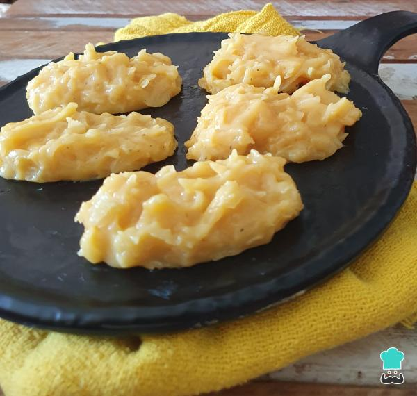

COCADA CREMOSA
A moqueca capixaba é uma explosão de sabores leves e frescos do Espírito Santo. Feita em panela de barro, ganha um aroma irresistível à base de peixe fresco, urucum, pimenta, tomate e um toque especial de coentro, sem o uso de leite de coco ou dendê. O colorau dá um tom vibrante ao prato, que fica suculento e saboroso, ideal para acompanhar arroz branco e um delicioso pirão. Cada garfada revela o gosto autêntico do litoral capixaba, perfeito para quem deseja uma refeição simples e encantadora.

ingredientes (20 porções)
- 1 coco inteiro ralado
- A mesma medida da lata de açúcar (se o coco for muito grande utilizar 1 lata e 1/2 de açúcar)
- 1 lata de leite condensado
Modo de preparo (40 minutos)
- Leve ao fogo todos os ingredientes em uma panela média, em fogo alto, mexendo com uma colher de pau.
- Ao começar a desprender do fundo da panela despeje a cocada em mármore untada com margarina (pode utilizar a pia).
- Espere amornar e corte no formato e tamanho desejado.